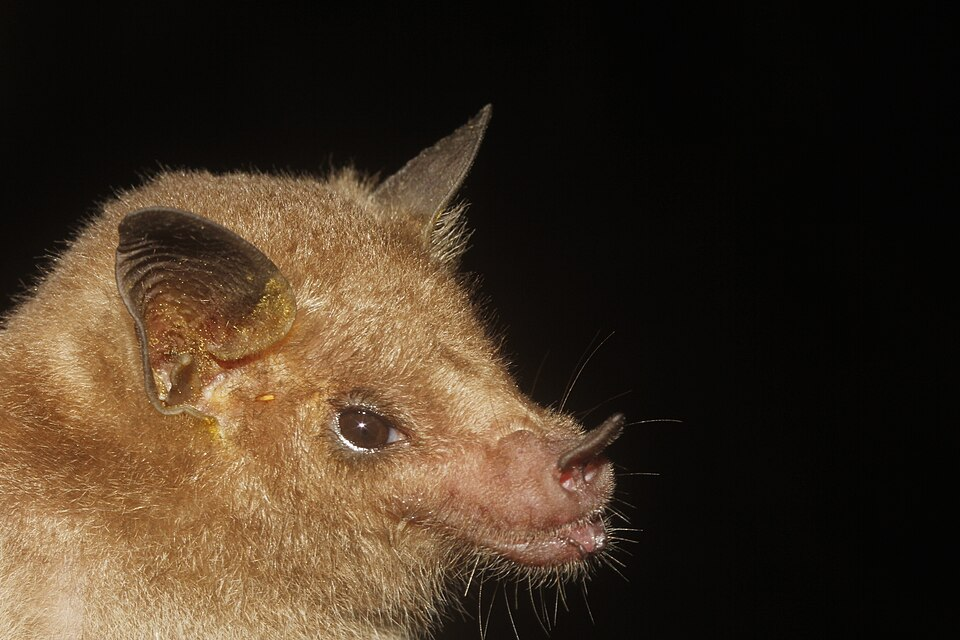
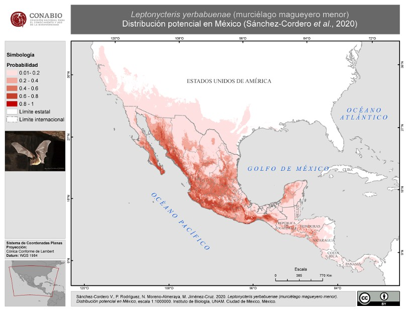
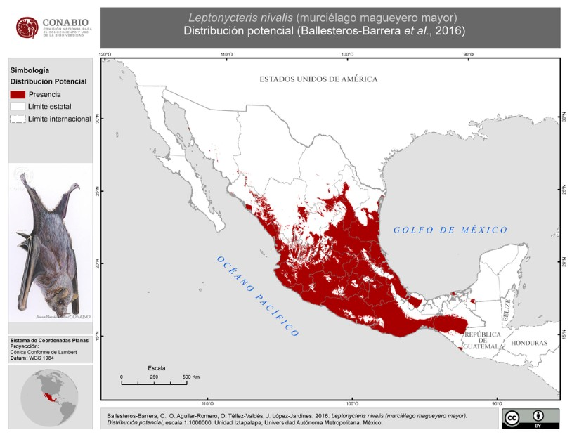
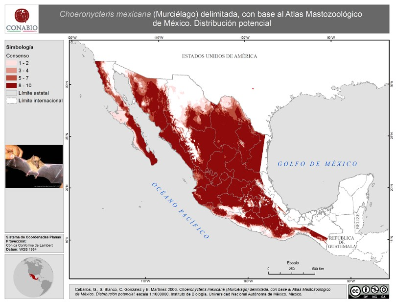
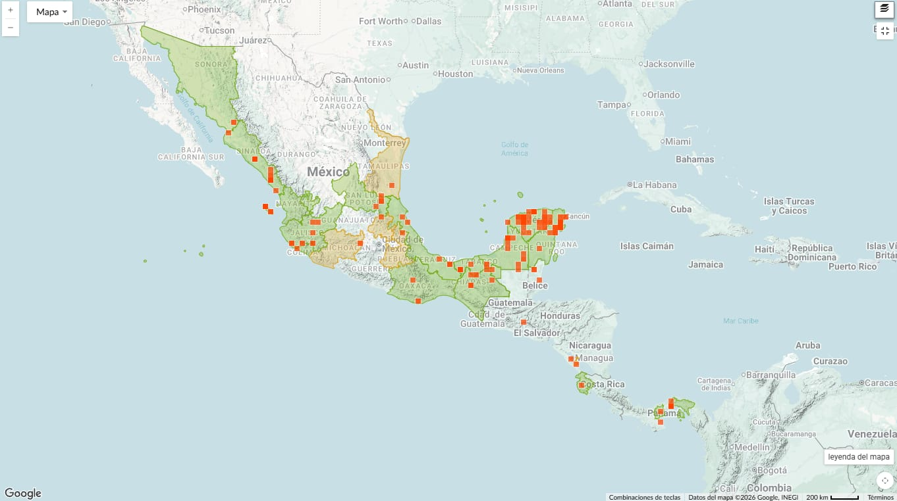

Más que una apariencia
Los murciélagos suelen despertar miedo por su aspecto y por los mitos que existen sobre ellos. Sin embargo, cumplen funciones importantes en la naturaleza. Dependiendo de la especie, pueden ayudar a polinizar flores, dispersar semillas o controlar poblaciones de insectos.
En México, algunos murciélagos se alimentan del néctar y el polen de flores de agaves, cactus y otras plantas. Mientras buscan alimento, pueden transportar polen y contribuir a la reproducción de ciertas plantas.
No todos los murciélagos comen lo mismo ni cumplen las mismas funciones. Conocer sus hábitos nos ayuda a entender por qué es importante conservar tanto a estos animales como los ambientes donde viven.
Explora información sobre la biodiversidad de México ↗Murciélago magueyero menor
Leptonycteris yerbabuenae


📍 ¿Dónde vive?
Se encuentra en México y también llega a zonas del suroeste de Estados Unidos. Su presencia depende de las condiciones del hábitat, los refugios disponibles y los recursos alimenticios. Para conocer los límites precisos de su distribución es importante consultar registros y mapas actualizados.
👀 Conócelo
Es un murciélago adaptado para aprovechar flores que le proporcionan néctar y polen. Sus desplazamientos entre refugios y zonas de alimentación lo conectan con distintos ambientes.
🍯 ¿Qué come?
Se alimenta principalmente de néctar y polen. También puede aprovechar frutos de determinadas plantas. Entre sus recursos alimenticios se encuentran flores de agaves y cactus.
🌱 ¿Por qué es importante?
Cuando visita flores, el polen puede adherirse a su cuerpo y ser transportado hasta otras flores. De esta manera, puede contribuir a la polinización de algunas plantas. Su papel depende de las plantas que visita y de las condiciones de cada ecosistema.
🛡️ ¿Cómo podemos protegerlo?
Conservar los refugios y las plantas de las que obtiene alimento ayuda a mantener las condiciones que necesita. También es importante evitar la perturbación de colonias y la pérdida de vegetación natural.
Consulta la Lista Roja de la UICN ↗La categoría de riesgo debe verificarse en la evaluación vigente de la especie y en la normativa mexicana aplicable.
Murciélago magueyero mayor
Leptonycteris nivalis


📍 ¿Dónde vive?
Habita regiones de México y alcanza el sur de Estados Unidos. La distribución que se muestra en un mapa representa un área conocida o estimada; no significa necesariamente que el murciélago esté presente en cada punto de esa zona.
👀 Conócelo
Su hocico alargado y su lengua le ayudan a obtener alimento de flores. Como otros murciélagos nectarívoros, necesita encontrar recursos florales y refugios adecuados a lo largo de su ciclo de vida.
🍯 ¿Qué come?
Su alimentación está basada principalmente en néctar y polen de flores. La disponibilidad de estos recursos puede cambiar según la temporada y el lugar.
🌱 ¿Por qué es importante?
Al visitar flores puede transportar polen y contribuir a la reproducción de algunas plantas. Proteger a este murciélago también significa cuidar las flores y los ambientes de los que depende para alimentarse.
🛡️ ¿Cómo podemos protegerlo?
Es importante conservar sus refugios, evitar molestias a las colonias y mantener las plantas que producen néctar. La información sobre su estado de conservación debe consultarse en fuentes oficiales, porque las categorías nacionales e internacionales no siempre son iguales.
Consulta información ambiental de SEMARNAT ↗ Consulta la evaluación internacional de la UICN ↗Murciélago trompudo mexicano
Choeronycteris mexicana


📍 ¿Dónde vive?
Se encuentra en México y también se registra en zonas del suroeste de Estados Unidos y otras regiones al sur de su distribución. La ubicación exacta de las poblaciones debe comprobarse mediante registros confiables y mapas actualizados.
👀 Conócelo
Su hocico alargado y su lengua extensible están relacionados con la alimentación a partir de flores. Estas características le permiten acceder al néctar de determinadas plantas.
🍯 ¿Qué come?
Se alimenta principalmente de néctar y otros recursos florales. La dieta concreta puede variar de acuerdo con la disponibilidad de alimento en cada ambiente.
🌱 ¿Por qué es importante?
Durante la búsqueda de alimento, puede entrar en contacto con el polen de las flores que visita. Si ese polen llega a otras flores compatibles, puede contribuir a la polinización. La importancia de esta relación depende de la planta y de la evidencia disponible para cada interacción.
🛡️ ¿Cómo podemos protegerlo?
Conservar la vegetación nativa y los refugios es una forma de proteger las condiciones que necesita para vivir. También conviene evitar perturbaciones innecesarias en cuevas y otros sitios de descanso.
Explora recursos sobre especies mexicanas ↗Murciélago lengüilargo
Glossophaga mutica


📍 ¿Dónde vive?
Para describir con precisión su distribución hay que consultar bases de datos taxonómicas y registros geográficos que identifiquen a Glossophaga mutica de manera explícita. Esto es especialmente importante cuando se comparan registros antiguos con clasificaciones más recientes.
👀 Conócelo
Los murciélagos del género Glossophaga presentan adaptaciones para obtener alimento de las flores. Para describir las características particulares de esta especie debemos utilizar estudios que la identifiquen de forma específica.
🍯 ¿Qué come?
El néctar y el polen son recursos importantes para varias especies nectarívoras. La dieta que se atribuya específicamente a Glossophaga mutica debe apoyarse en registros o estudios que correspondan a esta especie.
🌱 ¿Por qué es importante?
Los murciélagos que visitan flores pueden transportar polen y participar en las relaciones entre plantas y animales. Para establecer qué función desempeña Glossophaga mutica en una región concreta, es necesario consultar estudios realizados sobre esa especie.
🔎 ¿Por qué importa su clasificación?
Los nombres científicos pueden cambiar cuando nuevas investigaciones permiten distinguir especies que antes se agrupaban bajo un mismo nombre. Por eso, un estudio antiguo que menciona a Glossophaga soricina no debe atribuirse automáticamente a Glossophaga mutica sin revisar cómo se identificaron los ejemplares.
🛡️ ¿Cómo podemos protegerlo?
Conservar la vegetación nativa y los refugios es una medida importante para los murciélagos. Las recomendaciones concretas y la categoría de conservación de esta especie deben basarse en información que corresponda a su clasificación taxonómica actual.
Consulta la base de datos de diversidad de mamíferos ↗🌎 ¿Cómo podemos ayudar a conservarlos?
Proteger a los murciélagos no requiere tocarlos ni acercarse a sus refugios. Podemos contribuir conservando la naturaleza y compartiendo información confiable.
- Respetar cuevas y otros refugios de murciélagos.
- Conservar plantas nativas, agaves y cactus de la región.
- Evitar molestar o manipular murciélagos silvestres.
- Informarse antes de considerar a un murciélago como peligroso.
- Apoyar iniciativas locales de conservación de la biodiversidad.
Los murciélagos forman parte de una red ecológica que conecta flores, frutos, semillas, insectos y otros organismos. Comprender su función nos permite reemplazar los prejuicios por una visión basada en evidencia.
La próxima vez que veas un murciélago, recuerda: su apariencia no cuenta toda la historia.
📚 ¿Quieres conocer más?
Esta página busca acercar la ciencia al público general. Si quieres profundizar, estas instituciones ofrecen herramientas para consultar información sobre especies, distribución y conservación.
-
CONABIO — Biodiversidad Mexicana.
Información sobre la biodiversidad de México.
Visitar el sitio de CONABIO ↗ -
UICN — Lista Roja de Especies Amenazadas.
Evaluaciones internacionales del riesgo de extinción.
Consultar la Lista Roja ↗ -
SEMARNAT.
Información ambiental y normativa mexicana, incluida la consulta
de la NOM-059 y sus modificaciones.
Visitar SEMARNAT ↗ -
Mammal Diversity Database.
Herramienta para revisar nombres científicos y clasificación
de mamíferos.
Consultar la base de datos ↗
Nota: estos enlaces son puntos de partida para consultar información. Antes de atribuir un dato a una especie concreta, verifica la ficha, el artículo o la evaluación correspondiente. Los mapas de esta página también deben incluir la fuente original de los datos y su fecha.